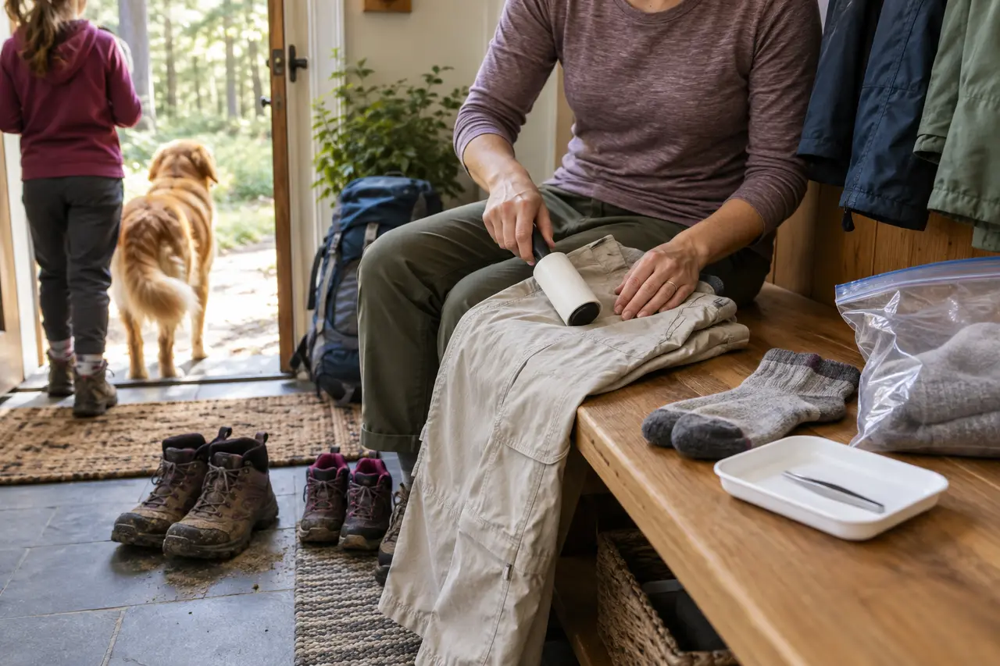

OUTDOOR SYSTEM · CHECK, REMOVE, RECORD
The Family Tick-Check Plan: Before, During, and After the Trail
Ticks are a routine outdoor risk, not a reason to panic. Reduce exposure, check methodically, remove attached ticks correctly and know when to call a clinician.

Before the trail: reduce the contact opportunities
Ticks live in grassy, brushy and wooded areas and can be encountered in yards as well as on hikes. CDC notes that exposure can occur year-round, with greatest activity in warmer months. Choose a route the family can follow without repeated wandering through tall grass or leaf litter, and walk near the center of established trails when conditions allow.
Dress for inspection: light-colored socks and pants make crawling ticks easier to see. Tuck or seal clothing only if it remains comfortable and does not create a heat problem. Bring a sealable bag for removed outer layers and a pair of clean fine-tipped tweezers.
Repellent without improvisation
Use an EPA-registered insect repellent and follow the exact label for age, skin, clothing, reapplication and washing. CDC lists products containing DEET, picaridin, IR3535, oil of lemon eucalyptus, para-menthane-diol or 2-undecanone as options when registered for the intended use. CDC says not to use oil of lemon eucalyptus or PMD on children under three. Apply sunscreen first and repellent second when both are used.
Adults should apply repellent to children according to the label, avoiding hands, eyes, mouth, cuts and irritated skin. Do not spray directly at a child’s face; apply to adult hands first if the label permits facial use. Wash treated skin after returning indoors according to the product directions.
Permethrin is for treating clothing and gear when the label says so, not for direct application to skin. CDC describes 0.5% permethrin products for boots, clothing and camping gear. Buy pretreated items or follow the treatment label exactly, including drying, washing and pet precautions. Do not invent a concentration or soak method.
During the outing: quick checks, no obsession
At snack stops, scan socks, cuffs, waistbands and exposed skin. Brush off a crawling tick before it attaches, using a barrier or tool if preferred. Children do not need adults repeatedly alarming them. Use one calm line: “We check because tiny hitchhikers are easier to handle early.”
Keep packs and jackets off brush piles. If the route becomes a corridor of waist-high vegetation, turn around rather than treating repellent as permission. The family weather-cutoff plan works for biological conditions too: change the route when the actual margin has changed.
The return-home sequence
- Contain gear: put outer layers and packs in a designated area rather than carrying them through bedrooms.
- Check pets: follow veterinary guidance; ticks can ride indoors on animals.
- Dry clothing: CDC advises tumbling dry clothing on high heat for ten minutes to kill ticks on dry clothing, with more time needed if items are damp. If washing first, hot water is recommended because cold and medium-temperature water may not kill ticks. Follow garment care labels and current CDC directions.
- Shower: CDC says showering within two hours of coming indoors may help wash off unattached ticks and is a good opportunity for a check.
- Run the full-body check: use a mirror and good light; adults help children.
Check under the arms; in and around the ears; inside the belly button; behind the knees; in and around hair; between the legs; and around the waist. Also inspect scalp lines, sock marks and tight clothing edges. Do not stop because one crawling tick was found; finish the full check for every person.
If a tick is attached
- Use clean, fine-tipped tweezers.
- Grasp the tick as close to the skin’s surface as possible.
- Pull upward with steady, even pressure. Do not twist or jerk.
- If mouth parts break off and cannot be removed easily with tweezers, leave the area alone and let the skin heal; do not dig aggressively.
- After removal, thoroughly clean the bite area and hands with rubbing alcohol, soap and water, or an approved skin-cleaning method.
- Dispose of the tick by placing it in alcohol, a sealed bag or container, wrapping it tightly in tape, or flushing it. Never crush it with bare fingers.
Do not use petroleum jelly, nail polish, heat or another substance to make the tick detach. CDC’s goal is prompt removal, not waiting for the tick to release. A commercial removal tool is acceptable only when its instructions support the same close, controlled removal and an adult can use it correctly.
Record, then return to normal life
Write down the date, likely location of exposure, bite location and any estimate of attachment. A clear photograph of the tick next to a ruler can help with later identification, but do not delay removal to stage a photo. CDC discourages relying on testing an individual tick to make treatment decisions because results may not predict whether infection occurred.
Watch for fever, rash, headache, unusual fatigue, muscle or joint aches, facial weakness or other new symptoms in the days and weeks after a bite. Rashes do not always look like a perfect bull’s-eye. Contact a healthcare provider if symptoms develop, and mention the tick bite, date and location. For urgent symptoms, severe illness or an allergic reaction, seek urgent medical care.
When to call a clinician now
Call promptly when the tick cannot be removed, when parts remain and the area becomes inflamed, when the person is pregnant or medically vulnerable and guidance is needed, or when the bite circumstances may meet current criteria for preventive treatment. Antibiotic decisions depend on tick identification, local infection rates, attachment time, timing and individual medical factors. They belong to a clinician, not a family checklist or an internet photo comparison.
Use the family first-aid kit guide to keep tweezers, gloves and cleaning supplies organized, and the family bug-protection guide for mosquitoes and other biting insects. Neither page replaces medical evaluation.
The five-minute weekly reset
Replace the tweezers after they become bent or contaminated. Check repellent expiration and label condition. Restock sealable bags. Make sure every adult knows the removal sequence and where the kit lives. During peak outdoor months, keep the check routine boring and repeatable.
Who should change the plan
Families who cannot use a particular repellent, manage heat in covering clothing, or perform a reliable check should ask a pediatrician or other qualified clinician for an individualized plan. Choose short, open routes when brush exposure would be difficult to control. Skip a trail when posted conditions, vegetation or family capacity make the aftercare unrealistic.
Official sources
- CDC: preventing tick bites
- CDC: what to do after a tick bite
- EPA repellent search tool
- EPA repellent safety information
- New York State Department of Health Lyme disease information
MAKE THE WEEKEND COUNT
Useful beats heroic.
Build the day your family can finish well, then leave enough energy for the ride home.
More family plans